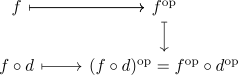

opposite simplicial set and s-horn
Proposition
Let $\Lambda_S^n$ be the S-horn and $(\Lambda_S^n)^{\mathrm{op}}$ the opposite simplicial set. Then
are canonically isomorphism where
Proof
Define the natural transformation
where $\tau[m]$ is the application of the opposite linear order endofunctor on the hom-sets
welldefined
on objects
Let $f \in \{f \in \mathrm{Hom}_{\Delta}([m],[n]) \vert \exists i \in [n] \setminus S, i \not\in \mathrm{im}(f)\} = (\Lambda_S^n)_m$ Then there exists an $i \in [n] \setminus S$ such that $i \not\in \mathrm{im}(f)$
Then $(n - i) \not\in \mathrm{im}(f)$ and by definition, as $i \not\in S$ we conclude that $n - i \not\in S^{\mathrm{op}}$
naturality
note that this follows from functorality, as

isomorphism
note that the opposite linear order functor as isomorphism. Hence applying it twice gives